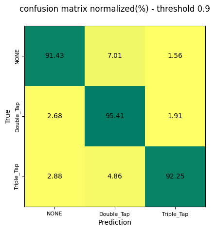

Deep learning for gesture detection from IMU time series
Designed, trained and evaluated deep neural networks that detect facial tap gestures from raw earbud accelerometer data. The final architecture combines 1D CNN layers for temporal feature extraction with GRU layers for sequential patterns, reaching over 92% accuracy within the embedded memory budget.
The data needed extensive filtering, normalisation and cleaning, then event-based segmentation of logs where users tapped in static and in-motion scenarios. Models were built in TensorFlow/Keras, tuned with TensorBoard, then quantised and evaluated on-device with the company's internal ML tooling.
Challenges
- Highly imbalanced data: taps are tiny next to the "no event" class
- Strong variability in how each user taps
- Inconsistent data across usage scenarios
- Strict limits on model size, latency and false-accept rate
Solutions
- Noise augmentation and focal loss for imbalance and low SNR
- Hyperparameter searches across architectures and window sizes
- Several regularisation techniques for generalisation
- Optimised for robustness and memory before quantisation

